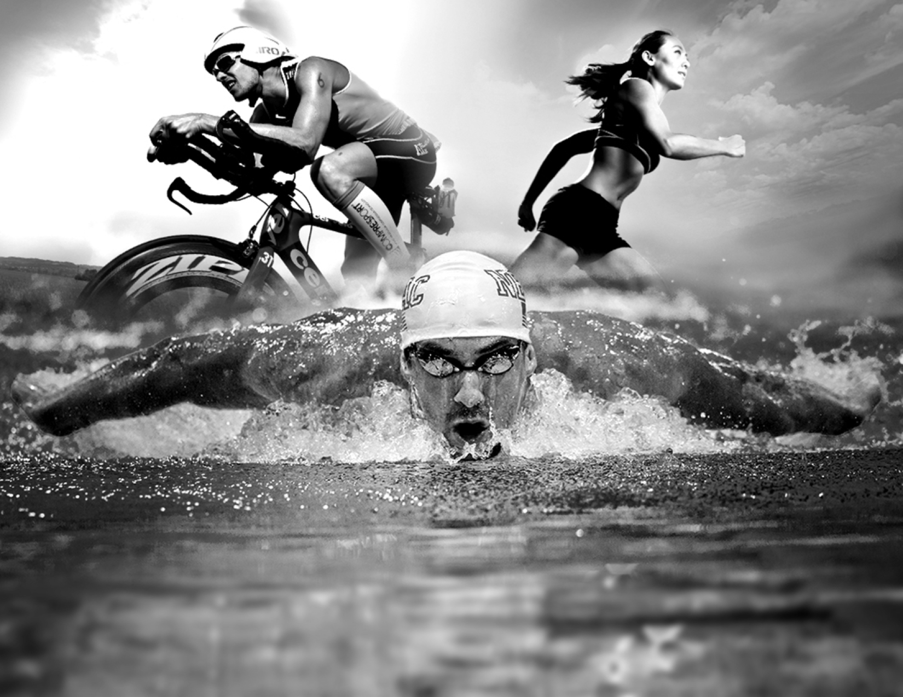

Czym jest triathlon?
-
Triathlon to wielodyscyplinowa forma sportu, która składa się z trzech kolejnych dyscyplin: pływania, jazdy na rowerze i biegu. Uczestnicy, zwani triathlonistami, muszą pokonać określone odległości w każdej z tych dziedzin, zazwyczaj bez przerw między nimi. Triathlon to nie tylko test wytrzymałości fizycznej, ale także umiejętności przenoszenia się płynnie z jednej dyscypliny do drugiej. Zawodnicy muszą efektywnie zarządzać energią, utrzymywać równowagę i utrzymywać wysoką intensywność wysiłku przez całą trasę. Triathlon cieszy się rosnącą popularnością jako forma aktywności fizycznej, łącząca różnorodne umiejętności sportowe i dostarczająca wyjątkowych wyzwań dla swoich uczestników.
- 